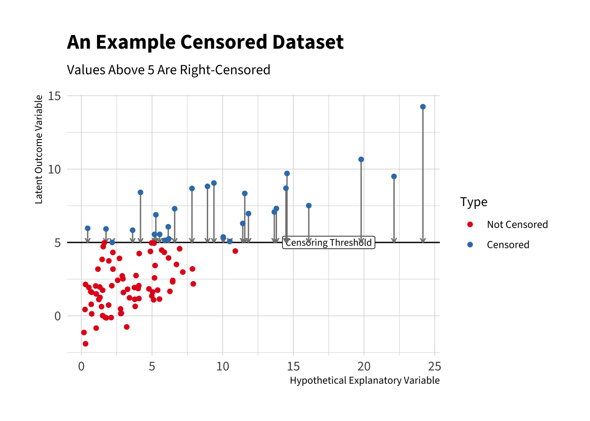

For some outcomes, we certain observations are censored. For the non-censored observations, we know the value exactly, as usual. But for the censored observations, we only know the interval that the value lies within.
For example, we could imagine a sliding scale on a survey that allows respondents to report their exact income within the $10k to $150k interval, but the endpoints are “less than $10k” and “greater than $150k.” For most respondents, we know their income. But for others, we only know that it is less than $10k. And for others, we only know it is greater than $150k.
18.1 Adjusting the individual likelihood
In uncensored data, the likelihood contribution of an observation \(y_i\) is the pdf/pmf evaluated at the observed outcome \(L_i(\theta) = f(y_i; \theta)\).
For censored observations, \(y_i\) is unknown, so we replace \(f(y_i; \theta)\) with the probability of the observed region.
Right-censoring at \(c\) (we only know \(y_i>c\)) \[
L_i(\theta) = \Pr(y_i>c; \theta) = 1 - F(c; \theta).
\]
Left-censoring at \(c\) (we only know \(y_i<c\)) \[
L_i(\theta) = \Pr(y_i<c_i; \theta) = F(c; \theta).
\]
Interval censoring on \((a,b)\) (we only know \(a<y_i<b\)) \[
L_i(\theta) = \Pr(a<y_i<b; \theta) = F(b; \theta) - F(a; \theta).
\]
18.2 Combining into the full likelihood
The full likelihood multiplies pdfs/pmfs for fully observed cases and cumulative probabilities for censored cases.
Here is an example dataset that shows the observed data and their corresponding likelihood contributions.
\[
\begin{array}{c c c c c c c c c c c}
y_1=2 & ; & y_2>3 & ; & y_3=1 & ; & y_4<1 & ; & y_5 \in (1,3) & ; & \cdots \\[6pt]
f(2) & \times & \Pr(Y>3) & \times & f(1) & \times & \Pr(Y<1) & \times & \Pr(1<Y<3) & \times & \cdots \\[6pt]
f(2) & \times & 1-F(3) & \times & f(1) & \times & F(1) & \times & F(3)-F(1) & \times & \cdots
\end{array}
\] This gives us the likelihood
It becomes more complicated to write the likelihood, because we need a way to flag the observation that are censored and how they are censored. But the intuition remains the same.
Here are a couple of ways we might write this likelihood.
18.2.1 Option 1
For a observations \(i \in \{1, 2, ... n\}\), let
\(U = \{i : \text{uncensored}\}\) with observed value \(y_i\)
\(R = \{i : \text{right-censored at } c_i\}\)
\(L = \{i : \text{left-censored at } c_i\}\)
\(Q = \{i : \text{interval-censored on } (a_i,b_i)\}\)
To see how censoring can bias estimates and how adjusting the likelihood can fix the bias, let’s simulate some fake data with censoring.
# set seed for reproducibilityset.seed(1)# simulate latent outcome from usual normal linear modeln <-100x <-rexp(100, rate =1/5)X <-cbind(1, x) # intercept + one predictorbeta <-c(1, 0.5)sigma <-2mu <- X %*% betay_star <-rnorm(n, mean = mu, sd = sigma) # if fully observed# censor data# note: y = c if censoredc <-5d <-as.integer(y_star > c) # 1 = censored, 0 = uncensoredy <-ifelse(d ==1, c, y_star) # observed outcome (i.e., the censored outcome)# make data framedata <-data.frame(y, x, y_star, d)head(data)
# verify the amount of censoringmean(d) # proportion of data that are censored
[1] 0.28
The plot below shows the structure of censored data. The blue points are censored. We do not know the values, we only know they fall above the threshold (i.e., are right-censored).
Code
# load packageslibrary(hrbrthemes)library(showtext)# download and register Source Sans 3 from google fontsfont_add_google("Source Sans 3", family ="Source Sans 3")showtext_auto() # create factorgg_data <- data |>mutate(d_lbl =factor(d, levels =c(0, 1), # original coding of dlabels =c("Not Censored", "Censored")))# make plotggplot(gg_data, aes(x = x, y = y_star, color = d_lbl)) +geom_hline(yintercept = c) +annotate("label", x =17.5, y = c, label ="Censoring Threshold", size =3) +geom_segment(data =filter(gg_data, d ==1),aes(x = x, xend = x, y = y_star, yend = y),arrow =arrow(length =unit(0.15, "cm")),inherit.aes =FALSE,color ="grey50" ) +geom_point() +# arrows from y_star to y, only for censored caseslabs(y ="Outcome", color ="Censoring") +labs(title ="An Example Censored Dataset",subtitle ="Values Above 5 Are Right-Censored",x ="Hypothetical Explanatory Variable",y ="Latent Outcome Variable", color ="Type") +theme_ipsum(base_family ="Source Sans 3") +scale_color_manual(values =c("#e41a1c", "#377eb8", "#4daf4a"))

18.3.1 Ignore censoring
One approach would be to ignore the censoring. Remember that, by convention, the censored values have the cutoff value. In the fake data, I chose c <- 5 for the cutoff. Ignoring the censoring, we estimate a slope of 0.23 give-or-take 0.03. This is much too low.
# fit ignoring censoringfit_lm <-lm(y ~ x)arm::display(fit_lm)
lm(formula = y ~ x)
coef.est coef.se
(Intercept) 1.68 0.24
x 0.23 0.03
---
n = 100, k = 2
residual sd = 1.59, R-Squared = 0.32
18.3.2 Model censoring
Alternatively, we could model the censoring. After adjusting the likelihood function as described above, the usual recipe works as expected (ML to estimate parameters → Hessian for their variances → invariance property for quantities of interest → delta method for their variances).
# log-likelihood w/ censoringnormal_rightcens_ll <-function(theta, y, X, c, d) {# tidy up parameters k <-ncol(X) beta <- theta[1:k] sigma <- theta[k +1] mu <- X %*% beta# uncensored ll_unc <-dnorm(y, mean = mu, sd = sigma, log =TRUE)# right-censored at c: log Pr(Y > c) ll_cens <-pnorm(c, mean = mu, sd = sigma, lower.tail =FALSE, log.p =TRUE)# multiply ll <-sum((1- d) * ll_unc + d * ll_cens)return(ll)}# optimtheta_start <-c(rep(0, ncol(X)), 2)est <-optim(par = theta_start,fn = normal_rightcens_ll,y = y,X = X,c = c,d = d,method ="BFGS",control =list(fnscale =-1),hessian =TRUE)# point estimatesest$par
[1] 0.8941892 0.5134936 1.8645425
The figure below shows the estimated intercept, slope, and error SD from the two approaches, compared to the truth. This figure shows that OLS is underestimating the slope, as you might have guessed from the scatterplot above.
18.4 More Reading
The normal model with censoring that I used above to illustrate the idea is sometimes called the “tobit model.” King (1998, 208–10) provides a brief discussion of censoring. Long (1997, 7:187–215) provides a chapter-length description of censoring in the context of the tobit model. Box-Steffensmeier and Jones (2004, 15–19) discuss censoring in the context of duration models, where is is seemingly omnipresent.
King, Gary. 1998. Unifying Political Methodology: The Likelihood Theory of Statistical Inference. Revised edition. Ann Arbor: University of Michigan Press.
Long, J. Scott. 1997. Regression Models for Categorical and Limited Dependent Variables. Vol. 7. Advanced Quantitative Techniques in the Social Sciences. Thousand Oaks, CA: Sage.
Box-Steffensmeier, Janet M., and Bradford S. Jones. 2004. Event History Modeling: A Guide for Social Scientists. Cambridge: Cambridge University Press.